Date: July 13, 2025
Subject: Multimedia Systems
Description:
This project showcases various cinematic shots including close ups, wide shots, and tracking shots. Each shot highlights proper composition, perspective, camera movement, and storytelling techniques to create strong visual impact and emotional depth. The project demonstrates creativity, technical skills in video editing, and an understanding of basic filmmaking principles. It was created using Filmora Editor under the guidance of Adviser Gene Boy Pitos.
Date: July 13, 2025
Subject: Multimedia Systems
Description:
The EARLY Chairs Catalog showcases a premium collection of gaming and ergonomic chairs designed for comfort, performance, and durability. It features a variety of well-known chair brands with high-quality designs for gamers and professionals. Each chair includes ergonomic features such as adjustable armrests, lumbar support, and reclining mechanisms. These features help provide better support and long-lasting comfort. The catalog was created using Adobe Photoshop under the guidance of Adviser Gene Boy Pitos
Date: December 13, 2024
Subject: Living In IT Era
Description:
This brochure presents EarlyWear’s modern and minimalist fashion collection with stylish and comfortable clothing for everyday wear. It features high-quality images, product descriptions, available sizes, and prices. The brochure also includes a special discount offer for customers. It reflects EarlyWear’s mission to combine elegance, practicality, and sustainability in every design. It was designed in Adobe Photoshop under the guidance of Adviser Charen Reposposa.
Date: Decemebr 7, 2025
Subject: The Entrepreneurial Mind
Description:
GuroGo is an educational platform designed to make learning simple and smart for students. It helps learners understand lessons through easy explanations and interactive materials. The platform provides organized learning resources for both students and teachers. With GuroGo, studying becomes more engaging and accessible anytime. This project was created under the guidance of Mateo Navarro.
Date: July 13, 2025
Subject: Multimedia Systems
Description:
This project shows different types of photography that capture the beauty of nature and surroundings. It includes photos of landscapes, seas, and other natural views. The images highlight how photography can show the details and beauty of the environment. The photos were edited and enhanced using Adobe Photoshop to improve their quality. This project was created under the guidance of Gene Boy Pitos.